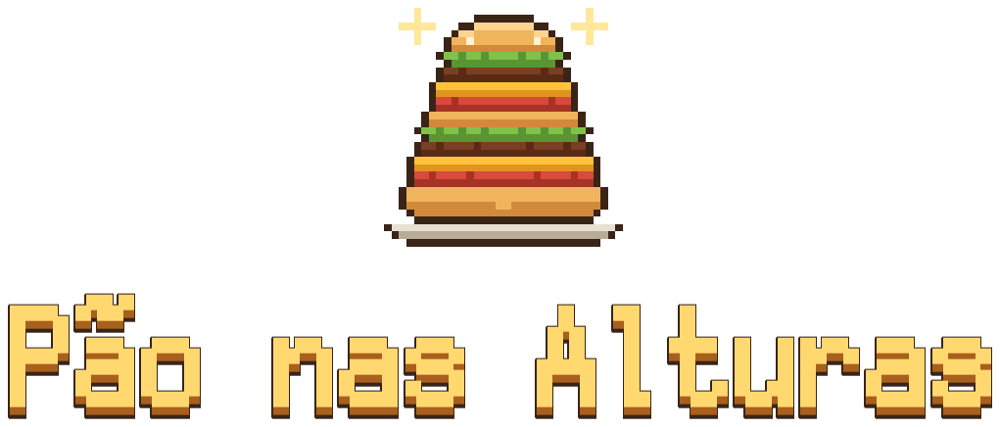
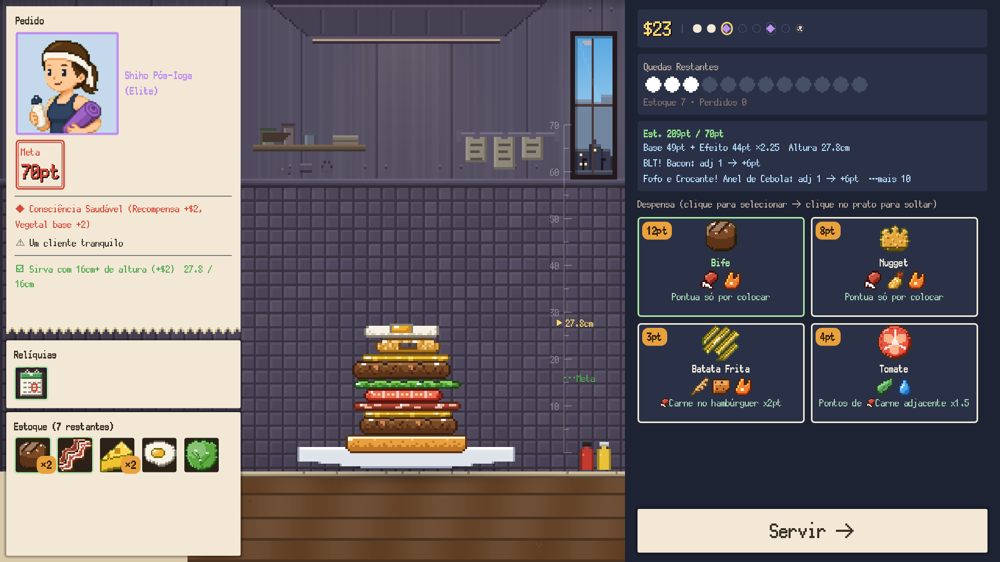
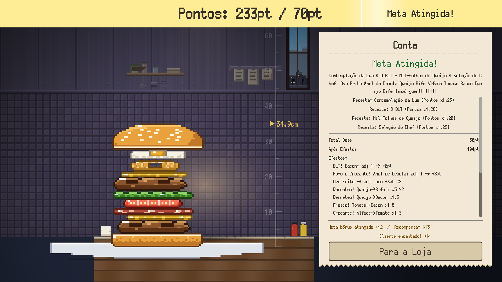
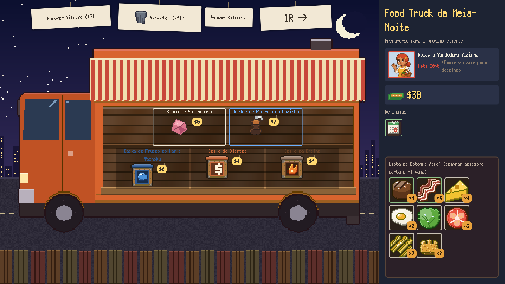

Solte! Empilhe! Encaixe e faça sinergia!
Um roguelike de hambúrgueres com física real
Adicionar à lista de desejos no SteamLançamento previsto: 4º trimestre de 2026 / Windows (Steam)
Que jogo é esse?
Pão nas Alturas é um roguelike de construção de baralho em que você empilha hambúrgueres com física real.
Você comanda a hamburgueria. Cada cliente traz uma meta, e você monta o hambúrguer para cumpri-la, na hora, direto no prato. O problema é que os ingredientes obedecem à física. Mirar a queda e manter a torre de pé é com você. Ingredientes vizinhos encadeiam efeitos entre si, e quanto mais alto e organizado for o seu empilhado, maior a pontuação.
Como funciona uma partida

Mire e solte
Solte os ingredientes da mão no prato com mira e ative sinergias entre vizinhos. Eles rolam, tombam e desmoronam.

Encaixe e faça sinergia
Coloque o pão de cima para servir e pontuar. Os efeitos dos vizinhos se encadeiam e a pontuação dispara. Não bateu a meta, é game over na hora.

O food truck da noite
Ao atender um cliente, o food truck da noite (a loja) abre: compre caixas e relíquias e descarte os ingredientes que não quer. Satisfaça o chefe final e a vitória é sua.
O que você empilha
- Mais de 90 ingredientesPontos, multiplicadores, apoio. Todo efeito olha para o lado
- Mais de 30 receitasA combinação certa dá um multiplicador ao hambúrguer inteiro e desbloqueia novos ingredientes
- Mais de 40 relíquiasEfeitos permanentes que elevam etiquetas inteiras
- 8 chefsPão exclusivo e estoque inicial
- Clientes com personalidadePreferências, restrições, ossos. O pedido muda a cada vez
- Mais de 70 conquistasCom Códice e Álbum de hambúrgueres
Prove seu valor
O nível da loja ★0–5 e o Chef Veterano (o ponto de queda oscila sozinho de um lado a outro) aumentam a dificuldade. As pontuações do desafio diário e da Hora Extra disputam os rankings do Steam.
{kind=link}
{kind=link}
{kind=link}
{kind=link}
{kind=link}
Informações do jogo
- Título
- Pão nas Alturas
- Também conhecido como
- A Bun Above / いただきバーガー
- Gênero
- Empilhamento com física × roguelike de construção de baralho
- Desenvolvedora / Publicadora
- NoZworks
- Plataforma
- PC (Steam) / Windows 10 e 11 (64 bits)
- Lançamento
- 4º trimestre de 2026 (previsto)
- Idiomas
- Português (Brasil) / 日本語 / English / 简体中文 / 繁體中文 / 한국어 / Deutsch / Français / Español / Русский
Adicione à lista de desejos e não perca o lançamento
Ir para a página no Steam